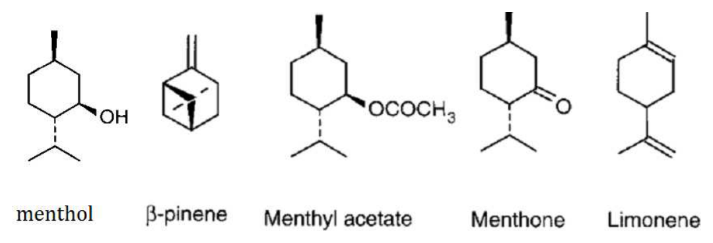
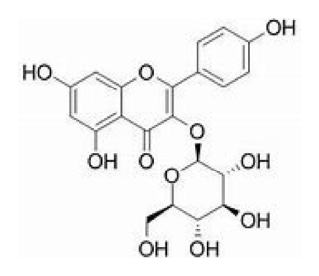
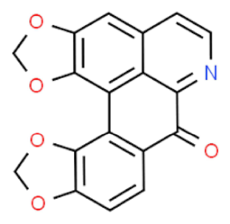

第 1 題待校
若一鏡像混合物含鏡像異構物A（99%）及B（1%），則其〔α〕值與純光學異構物A之值相比，會差異多少？
- （A）1%
- （B）2%
- （C）98%
- （D）99%
答案：（B）
這一頁是民國 109 年第 1 次藥師藥物分析與生藥學的整份歷屆試題，共 80 題，題目與標準答案出自考選部「國家考試試題及測驗式試題答案」開放資料，其中 78 題附有詳解。以下逐題列出題幹、選項與答案；要計時作答或記錄成績，請用線上練習。
考選部原始場次代碼：109020
線上作答這一科 →第 1 題待校
答案：（B）
答案：（D）
正解：題幹問的是藥品中鈉元素的常規含量分析，原子光譜技術直接量測元素的吸收或發射訊號；nuclear magnetic resonance spectroscopy 通常不作為此用途的例行方法，故選 D。
A：atomic absorption spectrophotometry 可量測鈉原子對特定輻射的吸收，屬元素定量常用方法。
B：atomic emission spectrophotometry 可利用受激鈉原子的發射訊號定量，鈉的火焰發射分析尤其常見。
C：inductively coupled plasma emission spectrometry 能同時分析多種元素，也可用於鈉含量測定。
本題考點：原子光譜法（atomic spectroscopy）——檢品目標是元素含量時，優先選原子吸收、原子發射或 ICP 類方法；核磁共振光譜（nuclear magnetic resonance spectroscopy）——主要依核的化學環境鑑定分子結構，不是一般藥品鈉含量的常規定量工具。
答案：（A）
正解：關鍵在頻率與波長的量綱不可互換。頻率的單位是 Hz，nm 是波長單位，所以（A）把頻率以 nm 表示為錯誤敘述，故選 A。
B：光子能量與頻率成正比、與波長成反比；波長愈長，能量愈低，此敘述正確。
C：紅外光譜慣用波數表示位置，單位為 cm-1，此敘述正確。
D：波數與頻率成正比，波數愈大代表每個光子的能量愈高，因此此敘述正確。
本題考點：電磁輻射關係式（electromagnetic-radiation relationship）——以 c = λν 先分清 λ 是波長、ν 是頻率，再判斷兩者的反向關係；波數（wavenumber）——紅外光譜以 cm-1 表示，波數愈大即能量愈高。
答案：（A）
正解：多形性是同一化學物在固態下具有不同晶體排列，這會改變官能基周遭的氫鍵與晶格作用，因此在所列方法中紅外光光譜法最適於比較其吸收帶差異，故選 A。
B：紫外光光譜主要反映電子躍遷；同一化學物的不同晶型在溶液中常失去原本晶格差異，辨識力較低。
C：核磁共振光譜擅長溶液中分子結構鑑定，但樣品溶解後晶體堆積差異通常不再保留。
D：原子吸收光譜法只反映元素組成；多形體的元素組成相同，不能藉此區分。
本題考點：藥品多形性（polymorphism）——要鑑別同一成分的不同固態排列時，選能保留或反映固態晶格差異的方法；紅外光譜（infrared spectroscopy）——比較氫鍵與官能基微環境造成的吸收帶位移，可作為多形體的鑑別依據。
答案：（D）
正解：紅外吸收強度取決於振動時偶極矩改變的大小。H-O 鍵極性高，伸縮振動造成的偶極矩變化最大，所以吸收強度最大，故選 D。
A：H-C 鍵的極性與振動偶極矩變化較小，吸收通常弱於 H-O 鍵。
B：H-H 是同核雙原子鍵，振動不產生偶極矩改變，屬紅外不活性，不能形成強吸收。
C：H-N 鍵具有極性並可出現紅外吸收，但其振動偶極矩變化通常仍小於 H-O 鍵。
本題考點：紅外選擇律（IR selection rule）——判斷某振動能否吸收紅外光時，先看振動是否改變偶極矩；吸收強度（IR absorption intensity）——鍵愈極性且振動造成的偶極矩變化愈大，訊號通常愈強。
答案：（C）
正解：白蛋白屬大分子且不宜經高溫汽化或劇烈裂解，電灑法（ESI）可直接由溶液產生多重帶電離子，並與 LC 流出液相容，故選 C。
A：電子撞擊（EI）通常用於可揮發、耐熱的小分子，離子化能量高，不適合完整白蛋白分析。
B：熱噴灑法（thermospray）可處理部分極性化合物，但對大分子蛋白質的溫和游離與多重帶電能力不如 ESI。
D：高速原子撞擊（FAB）是基質輔助的軟游離法，但作為 LC-MS 介面及處理大型蛋白質的適用性不如 ESI。
本題考點：電灑游離（electrospray ionization，ESI）——分析極性、大分子或蛋白質時，選可由溶液溫和形成多重帶電離子的介面；質譜游離法選擇——先依分子量、揮發性、耐熱性與是否需直接銜接 LC 判斷，不可把小分子用的 EI 套到蛋白質。
答案：（D）
正解：題幹列出的（B）吸收帶在 2750-3122 cm-1，落在 C-H stretching 的典型區域；題目選項中的（D）C-H stretching 與此相符，故選 D。
A：O-H bending 位於較低波數區域，不能用來指認題幹的（B）高波數吸收帶。
B：O-H stretching 對應題幹的（A）3140-3600 cm-1 寬廣吸收帶，而非（B）。
C：C=O stretching 常在題幹所列約 1705 cm-1 的（C）吸收帶出現，與（B）不同。
本題考點：紅外特徵吸收帶（IR characteristic absorption bands）——先以波數區域對應鍵結振動，再由選項選出正確官能基；伸縮與彎曲振動（stretching and bending vibrations）——同一鍵結的 stretching 通常出現在較高波數，判讀時不能只看元素組成。
答案：（C）
正解：逆相層析的流動相通常以水與可互溶的極性有機修飾劑組成。ethyl acetate 與水的互溶性有限，並非逆相層析常用溶媒，故選 C。
A：methanol 可與水互溶，常作為逆相層析流動相的有機修飾劑。
B：acetonitrile 與水互溶且黏度低，是逆相層析常用溶媒。
D：tetrahydrofuran 可作為逆相層析的有機修飾劑，雖使用時須留意其穩定性與系統相容性，仍屬可用溶媒。
本題考點：逆相液相層析（reversed-phase liquid chromatography）——流動相先確認能否與水相互溶，再評估洗脫強度與偵測相容性；有機修飾劑（organic modifier）——methanol、acetonitrile 與 tetrahydrofuran 可調整逆相保留，互溶性不足的溶媒不宜直接當常用水相系統組成。
答案：（B）
正解：分流注射會讓大部分進樣品經分流口排出，實際進入毛細管柱的樣品量下降；它可避免柱過載，卻不會提升偵測靈敏度，所以（B）不是優點，故選 B。
A：分流注射器可設定分流比並重複自動進樣，有利於標準化操作，屬其實務優點。
C：較少樣品進入柱內可減少柱過載與峰前伸，因此層析峰形通常較佳。
D：避免過量進樣可減少峰擴散與相鄰峰重疊；在原本可能過載的條件下，分流可使解析度改善。
本題考點：分流注射（split injection）——樣品濃度高或易造成柱過載時，以分流比控制進柱量；偵測靈敏度（detector sensitivity）與進樣量——分流減少到達偵測器的分析物量，改善峰形不等於提高靈敏度。
本題送分，無標準答案
本題經考選部公告一律給分。(C)aminoglycoside antibiotics與(D)heparin sodium皆缺乏發色團或紫外吸收特性，傳統上多依賴微生物效價法或衍生化後始能以HPLC分析，兩者皆可被視為「一般不用HPLC」的檢品，導致單一正解難以擇定。(A)vitamins與(B)非類固醇消炎藥（NSAIDs）多具芳香結構、UV吸收良好，為HPLC分析之典型應用對象，可先排除。作答以現行藥物分析學層析方法適用性教材為準。
答案：（A）
正解：本題有共同離子 Cl-，故先把食鹽濃度換成氯離子濃度，再用 AgCl 的 Ksp 計算。0.5844 g/L ÷ 58.44 g/mol = 0.0100 mol/L = 1.00 × 10⁻² M，故 [Cl-] 約為 1.00 × 10⁻² M。加入的 AgCl 為 2.0 g ÷ 143.22 g/mol = 1.40 × 10⁻² mol，遠多於平衡時所需溶解量，固體仍存在。Ksp = [Ag+][Cl-] = 1.5 × 10⁻¹⁰，因此 [Ag+] = Ksp/[Cl-] = 1.5 × 10⁻¹⁰ M² / 1.00 × 10⁻² M = 1.5 × 10⁻⁸ M，故選 A。
B：1.5 × 10⁻¹⁰ M 是 Ksp 的數值，直接把溶度積當成 [Ag+]，漏掉了共同離子 [Cl-] 的除法。
C：2.0 g ÷ 143.22 g/mol = 1.4 × 10⁻² mol 是假設 AgCl 全部溶解時的物質量，忽略 Ksp 很小及 NaCl 的共同離子效應。
D：1.0 × 10⁻² M 是原食鹽提供的 [Cl-]，不是平衡時的 [Ag+]。
本題考點：共同離子效應（common-ion effect）——難溶鹽置於含同一離子的溶液時，先以外加離子濃度近似平衡濃度；溶度積（solubility product，Ksp）——對 AgCl 寫成 Ksp = [Ag+][Cl-]，再以已知一離子濃度反推另一離子；單位換算——質量濃度先除以 molar mass 轉為 mol/L，才可代入平衡式。
答案：（B）
正解：卡爾費雪水分測定反應中，二氧化硫經氧化後在 pyridine 與 methanol 的系統內形成 pyridinium methyl sulfate，式為 C5H5N·HSO4CH3，故選 B。
A：C5H5N·SO3 不代表卡爾費雪反應在 methanol、pyridine 系統中的硫酸酯終產物。
C：C5H5N·H2SO4 是 pyridinium sulfate 的表示，未反映 methanol 參與後形成 methyl sulfate 的產物型態。
D：H2SO4 不是此反應系統中以游離酸形式表示的最終產物，硫酸根會與 pyridine 及 methanol 形成相應產物。
本題考點：卡爾費雪水分測定（Karl Fischer titration）——判讀反應產物時，要同時納入 iodine、sulfur dioxide、pyridine 與 alcohol 所在的反應系統；非水滴定反應產物（nonaqueous titration products）——溶媒與鹼性組成會改變酸性產物的存在形式，不能只寫成游離無機酸。
答案：（C）
正解：題幹限定中華藥典第七版的含量測定法，cocaine hydrochloride 依該版本採非水滴定法（nonaqueous titration），以適合鹼性生物鹼鹽的酸鹼滴定條件測定含量，故選 C。
A：毛細管電泳法可分離帶電物種，但不是題目所指定藥典版本的含量測定法。
B：核磁共振法可用於結構鑑定或特定條件下的定量，並非本題指定的藥典方法。
D：氣相層析法適用於具足夠揮發性或經適當前處理的化合物，不是本題所列 cocaine hydrochloride 的藥典含量測定法。
本題考點：藥典含量測定（pharmacopoeial assay）——題幹指定版本時，先依該版本列載方法作答，不能以可行的替代分析法取代；非水滴定（nonaqueous titration）——分析弱鹼性藥物或其鹽類時，利用適當非水溶媒改善酸鹼反應的終點判別。
答案：（D）
正解：製備並標定 0.1 N 過氯酸非水滴定試劑的重點是提供無水酸性溶媒、移除水分並以適當基準物標定；不必特別使用濃度達 90% 的過氯酸，故選 D。
A：冰醋酸作為非水滴定的酸性溶媒，是製備此類過氯酸滴定液的重要組成。
B：乙酐可與殘留水分反應，以降低水分對非水滴定反應與終點的干擾。
C：鄰苯二甲酸氫鉀可作為標定滴定液濃度的基準物，故屬製備及標定流程所需材料。
本題考點：非水滴定（nonaqueous titration）——測定弱鹼性藥物時，先建立適當酸性且低含水的反應環境；水分控制（water control）——非水滴定對水分敏感，製備時以除水試劑降低水對酸鹼平衡和終點的影響；滴定液標定（standardization）——配製後須以基準物確認實際當量濃度，不能只依名義濃度使用。
答案：（B）
正解：比較還原電位時，數值愈低表示還原傾向愈小、相對愈容易以氧化態存在。Fe2+ 還原為金屬 Fe 的標準還原電位低於題列的 Fe3+ 還原與兩個碘系半反應，故選 B。
A：Fe3+ 還原為 Fe2+ 的還原電位較高，不是題列各半反應中的最低者。
C：I2 還原為 I- 的碘氧化還原對具有較高的還原電位，與金屬鐵析出的半反應不同。
D：I3- 還原為 I- 也是碘系氧化還原對，其還原電位高於 Fe2+ 還原成 Fe。
本題考點：標準還原電位（standard reduction potential）——比較各半反應時，以 E° 較低者判為較不易被還原、較易在反向被氧化；半反應方向——題目寫成還原方向時直接比較還原電位，不能把氧化傾向與還原電位的正負方向混用。
答案：（C）
正解：pKa 的定義是酸解離常數 Ka 的負對數，即 pKa = -logKa，故選 C。
A：水溶液中的氫離子濃度是 [H+]，不是 pKa。
B：pKa 愈大表示 Ka 愈小，酸解離程度較低，因此酸性較弱而非較強。
D：氫離子濃度的負對數是 pH；pKa 的對數對象是 Ka，兩者不能互換。
本題考點：酸解離常數（acid dissociation constant，Ka）——比較酸性時看 Ka，大者代表較易解離；pKa——以 pKa = -logKa 換算時方向相反，pKa 小的酸較強；pH 與 pKa——pH 描述溶液當下的 [H+]，pKa 描述酸本身的解離平衡特性。
答案：（C）
正解：鎢碳鋼製造相關的硬金屬肺病與 cobalt 暴露有關；Co2+ 在飽和 KCl、KNO2 與 acetic acid 條件下可形成黃色的 potassium hexanitritocobaltate（III）沉澱，故選 C。
A：銅鹽的鑑別反應不以題幹所述生成黃色 cobalt nitrite 類沉澱為特徵。
B：鈣鹽常以草酸鹽、碳酸鹽等反應鑑別，與此 cobalt 的亞硝酸鹽沉澱反應不同。
D：鐵鹽有其特有的配位或氧化還原鑑別反應，不會依題幹條件形成此黃色沉澱。
本題考點：鈷離子鑑別（cobalt identification）——遇到飽和 KCl、nitrite 與酸性條件形成黃色沉澱時，連結到 cobalt 的配位沉澱反應；職業暴露（occupational exposure）——從產業製程回推可能金屬暴露，再以專一性化學反應確認金屬種類。
答案：（C）
正解：題幹指定中華藥典的細粉規格，細粉是所有粉粒均應通過第 80 號標準試驗篩，故選 C。
A：第 20 號篩孔較大，對應較粗的粉末範圍，不能作為細粉的全量通過門檻。
B：第 40 號篩的篩孔仍大於第 80 號，所要求的粒徑不夠細。
D：第 120 號篩的篩孔更小，代表比細粉更細的篩分要求，並非本題所問的細粉界線。
本題考點：粉末細度規格（powder fineness specification）——先看題幹問的是所有粉粒必須通過的篩號，再把篩號大小與粒徑粗細方向配對；藥典規格判讀（pharmacopoeial specification）——涉及藥典分類時須鎖定題幹指定版本與術語，不能以一般口語的細粗概念替代。
答案：（A）
正解：酮的定量若採亞硫酸氫鹽加成反應，關鍵是讓羰基先與（A）亞硫酸氫鈉形成 bisulfite addition product，再以酚酞觀察滴定終點。終點一時無色時，依此操作可在酚酞存在下加熱使顏色顯現，以判定反應已達終點；亞硫酸氫鈉因此是和酮反應、支撐此終點判讀的試劑，故選 A。
B：氫氧化鈉能調整滴定系統的鹼度並使酚酞轉色，但它不是與酮形成特異性加成物的試劑。只把顏色歸因於鹼性，會漏掉本題問的酮定量反應本身。
C：乙醇可作為溶媒或助溶劑，卻不會與酮羰基形成用於本法終點的 bisulfite addition product，不能取代亞硫酸氫鈉。
D：羥胺確可與酮形成 oxime，是另一類羰基衍生化與定量途徑；但題幹描述的是搭配酚酞加熱發色的亞硫酸氫鹽操作，反應設計不同。
本題考點：亞硫酸氫鹽加成反應（bisulfite addition reaction）——遇到可形成加成物的 aldehyde 或 ketone 時，以羰基捕捉及後續滴定作為定量線索；酚酞終點（phenolphthalein endpoint）——顏色是否能在規定加熱後顯現，須連同反應平衡判定，不可只看當下顏色。
答案：（B）
正解：黃蠟與白蠟的主要可皂化成分是脂肪酸和長鏈醇形成的酯，ester value 反映其中酯類皂化所消耗的鹼量。paraffin 為烴類，幾乎沒有可皂化酯；摻入後會使酯價偏離原有範圍，因此可作為添加 paraffin 的品質判別線索，故選 B。
A：琥珀酸含量不是黃蠟與白蠟以酯價評估時的目標成分。酯價量到的是可皂化酯的總量，不能專一換算成特定有機酸。
C：熔點是受組成與晶體結構影響的物理性質，需以熱分析或熔點測定判斷；滴定所得的酯價不能直接估算熔點。
D：酸敗較直接對應游離脂肪酸增加，可由 acid value 等指標觀察。ester value 著重結合型酯，不是判斷酸敗的主要數值。
本題考點：酯價（ester value）——比較含酯性天然蠟與無酯烴類摻偽物時，看可皂化酯是否被稀釋；皂化分析（saponification analysis）——要分辨酯類與游離酸的變化時，將 ester value 與 acid value 分開解讀。
答案：（D）
正解：比旋光度通常寫作 [α]λ^T，符號本身已標示測定波長 λ 與溫度 T，實測值也會隨溶劑改變。環境濕度不是比旋光度表示或校正的基本因子；樣品濃度和溶劑組成控制後，不以濕度作為此物性的呈現條件，故選 D。
A：波長會改變旋光色散的觀察結果，因此比旋光度必須標出測定波長，屬於影響因子。
B：溫度會影響分子構形、溶液狀態與旋光值，所以慣例上以右上標標示測定溫度。
C：溶劑會改變溶質與溶劑間的作用，以及分子可採取的構形；不同溶劑測得的比旋光度可不同。
本題考點：比旋光度（specific rotation）——比較旋光資料時，先核對波長、溫度、溶劑與濃度條件是否一致；旋光色散（optical rotatory dispersion）——同一物質的旋光值可隨波長改變，不能跨波長直接比較。
答案：（C）
正解：0.1% 等級的不純有機物分析，重點是先把主成分與雜質分離，再取得足以確認身分的專一訊號。（C）HPLC/mass spectrometry 兼具液相分離與質量選擇性，可在複雜製劑中定位並確認個別不純物，較能滿足此濃度層級的品質要求，故選 C。
A：UV spectrophotometry 量到的是整體吸收訊號；若主成分與雜質吸收重疊，不能直接指認是哪一個不純物。它看似靈敏，但缺少先分離各成分的能力。
B：thin layer chromatography 可用於初步篩檢或比對斑點，但分離度、定量精密度與身分確認能力通常不如結合質譜的液相層析。
D：IR spectrophotometry 可辨認官能基，卻難在主成分背景中分離並定量低含量有機雜質；相同官能基也不等於相同不純物。
本題考點：不純物分析（impurity analysis）——遇到低含量雜質時，先選能分離主成分與雜質的方法，再看偵測器是否具身分確認力；液相層析質譜（HPLC/MS）——需要同時處理複雜基質、分離與質量確認時，以保留時間加質荷比共同判讀。
答案：（B）
正解：氫核磁共振的化學位移以 ppm 表示，δ = Δν/ν0 × 10^6；訊號差 Δν 與儀器共振頻率 ν0 都隨外加磁場改變，因此比值在不同磁場強度下仍可比較。外加磁場會改變以 Hz 表示的頻率差，卻不是以 ppm 表示的化學位移因素，故選 B。
A：鄰近高陰電性原子會拉走電子密度，使氫核去屏蔽而往低磁場位移，會影響化學位移。
C：芳香環等產生的環流會改變核周圍的局部磁場，造成屏蔽或去屏蔽效應，因此會改變 ppm。
D：共振效應會重新分配電子密度；氫核周圍電子雲改變後，屏蔽程度與化學位移也會隨之改變。
本題考點：化學位移（chemical shift）——跨儀器比較 NMR 訊號時用 ppm，不把以 Hz 表示的頻率差當成同一數值；核磁屏蔽（nuclear shielding）——判斷位移方向時，看取代基、共振與環流如何改變核周圍電子密度。
答案：（B）
正解：制酸錠中的 glycine 與 calcium carbonate 都可在固態下提供可辨識的分子振動訊號。（B）Raman 光譜可直接量測錠劑，利用 glycine 與 carbonate 的特徵峰區分並定量兩種成分，省去先將每一成分分離或轉成衍生物的步驟，故選 B。
A：紫外光光譜對 glycine 與 calcium carbonate 缺少足夠的直接、專一吸收差異；錠劑基質也會使整體吸收難以分辨兩者。
C：串聯式液相層析質譜儀可分析許多有機小分子，但 calcium carbonate 是無機鹽，不能以同一套直接的 LC/MS 分析同時得到兩者含量，且需先進行溶解與前處理。
D：原子吸收光譜可量測 calcium 的元素量，卻不能據此得到 glycine 含量，因此無法直接完成兩成分的同步分析。
本題考點：Raman 光譜（Raman spectroscopy）——固態製劑含有成分各自可分辨的振動指紋時，可用特徵峰直接做組成分析；振動光譜選擇性（vibrational spectral selectivity）——同時定量多成分前，先確認每一成分都有不重疊或可解卷積的特徵訊號。
答案：（B）
正解：一般 5-mm NMR 管需要足以覆蓋偵測線圈與均勻磁場區的液柱，常用去氘溶劑體積約為 0.5～1 mL。（B）的範圍能提供可接受的訊號量與液面高度；體積太小會使液柱未充分進入量測區，故選 B。
A：0.5～1 dL 等於 50～100 mL，遠超過一般 NMR 管的容積，也不符合常規單次分析所需。
C：5～10 μL 只能形成極短液柱，樣品量與量測體積都不足，難以得到穩定的常規氫譜。
D：0.05～0.1 mL 即 50～100 μL，仍明顯低於標準管通常需要的體積；它看似節省溶劑，卻犧牲磁場均勻區的填充與訊號品質。
本題考點：NMR 樣品裝填（NMR sample preparation）——先依管徑與線圈量測區決定液柱高度，再決定溶劑體積；去氘溶劑（deuterated solvent）——除提供溶解介質外，還要供鎖場與建立可重現的磁場條件。
答案：（A）
正解：0.1～10 ppb 屬痕量濃度範圍，方法須兼具很低的偵測極限與高選擇性。（A）質譜儀以質荷比辨識離子，可在極低濃度下偵測目標分析物，因此最適合作為此範圍的直接分析儀器，故選 A。
B：紫外光／可見光光譜的訊號取決於發色團與吸光路徑，對多數未濃縮的 ppb 檢品靈敏度不足，也容易受共存吸收物干擾。
C：核磁共振光譜的訊號強度較低，通常需要遠高於 ppb 的分析物量；其結構資訊豐富，但不是痕量直接定量的首選。
D：紅外光光譜適合官能基與材料鑑別，常規量測對低濃度溶液的靈敏度不足，無法與質譜的痕量偵測能力相比。
本題考點：偵測極限（limit of detection）——看到 ppb 等級時，先排除訊號本質上需要高濃度的光譜法；質譜分析（mass spectrometry）——痕量分析要同時看離子化效率、質荷比選擇性與基質干擾，而非只看儀器名稱。
答案：（D）
正解：原子發散光譜測定的干擾常來自樣品導入、原子化與發射物種比例的改變，或來自基質造成的化學效應。（D）具選擇波長的濾光器是用來隔離分析線、減少非目標輻射的光學元件，本身不是造成 AES 分析干擾的來源，故選 D。
A：高溫會使部分原子離子化，改變可發射目標譜線的中性原子或離子比例，因而改變量測強度。
B：樣品黏度會影響霧化效率與進入火焰或電漿的樣品量，屬於物理性干擾。
C：硫酸鹽可能形成穩定或難解離的基質組成，影響原子化與發射強度，屬化學或基質干擾。
本題考點：原子發射光譜干擾（atomic emission spectrometry interference）——先分辨干擾發生在霧化、原子化、離子化或光譜重疊哪一段；光譜選擇性（spectral selectivity）——選擇適當濾光器或單色器是排除非分析線的手段，不把抑制干擾的元件誤當成干擾源。
答案：（D）
正解：可進行 NMR 的核種依核自旋量子數 I 分類；（D）14N 的 I = 1，因此符合題目要求。其餘三個核種皆為 I = 1/2，不能因為都可觀測 NMR 就誤認自旋量子數相同，故選 D。
A：31P 的核自旋量子數為 I = 1/2，不是 1。
B：13C 是常用的 NMR 核種，但其核自旋量子數同樣為 I = 1/2。
C：19F 的靈敏度高且常用於含氟化合物分析，但其核自旋量子數也是 I = 1/2。
本題考點：核自旋量子數（nuclear spin quantum number）——判讀 NMR 核種時，先查 I 值，不以元素是否常見於 NMR 代替自旋判斷；核自旋多重性（nuclear spin multiplicity）——核自旋 I 對應 2I + 1 個自旋狀態，遇到四極核時還要留意訊號展寬。
答案：（C）
正解：本題要先把濃度單位對齊：c 為 g/100 mL，所以 1% = 1 g/100 mL = 10 g/L。由 Beer-Lambert law 的 A = a × b × C，取 b = 1 cm 且 C = 10 g/L，可得 A（1%，1 cm） = 10a；因此（C）把係數寫成 100 是十倍誤差，故選 C。
A：molar absorptivity ε 以莫耳濃度表示，而 absorptivity a 以質量濃度表示；以分子量 M 換算質量濃度與莫耳濃度後，ε = a × M 是正確關係。
B：由 A（1%，1 cm） = 10a 移項，即得 a = A（1%，1 cm）/10，與敘述相符。
D：在光徑為 1 cm 且 c 以 g/100 mL 表示時，A = A（1%，1 cm） × c；移項得到 c = A/A（1%，1 cm），與敘述相符。
本題考點：Beer-Lambert law——代入吸光關係式前，先統一濃度單位與光徑單位；比吸光度（specific absorptivity）——A（1%，1 cm）對應 1 g/100 mL、1 cm 的條件，與以 g/L 表示的 absorptivity 換算時會出現 10 倍因子；莫耳吸光係數（molar absorptivity）——在質量濃度與莫耳濃度間轉換時，以分子量 M 連結 ε 與 a。
答案：（A）
正解：確認中藥是否摻入特定西藥，必須取得足以區分個別有機小分子的分離或身分資訊。（A）原子放射光譜法主要量測元素的發射訊號，不能據此辨認某一特定有機西藥成分，因此不能作為此類摻偽的確認方法，故選 A。
B：薄層層析法可將萃取物與標準品並行展開，比較 Rf 值與顯色反應，能作為摻偽鑑別的基礎方法。
C：高效液相層析法可依保留時間分離不易揮發或熱不安定的西藥，搭配適當偵測器可進一步確認。
D：氣相層析法適合可揮發或可衍生化的有機化合物，能以保留時間與標準品比對確認特定摻入物。
本題考點：摻偽確認（adulterant confirmation）——判斷特定有機藥物時，方法必須提供可與標準品比對的分子層級資訊；元素分析（elemental analysis）——元素訊號可做無機成分篩檢，但通常不足以確認一個特定有機藥品。

答案：（B）
正解：判準是非極性管柱上的 I 值主要隨沸點與分子量升高而增加。圖中五個成分裡，menthyl acetate 是 menthol 的乙酸酯，分子量與沸點都高於 menthol 本身，在非極性 BPX-5管柱上滯留時間更長、I 值更大；β-pinene 與 limonene 屬單萜烯，分子量較小、沸點較低，menthone 雖與 menthol 骨架相近但少了 OH 的氫鍵貢獻、沸點略低，三者的 I 值都低於menthol，故選 B。
A：β-pinene 是雙環單萜烯，分子量與沸點在圖列五個成分中最低，I 值明顯小於 menthol。
C：menthone 與 menthol 僅差在環上以酮基取代醇基，分子量相近但沸點較低，I 值略小於menthol。
D：limonene 是單環單萜烯，結構上不具極性官能基，沸點低於 menthol，I 值同樣小於menthol。
本題考點：非極性管柱上 Kovats indices 的判讀原則——同系物間 I 值主要反映沸點高低，酯化（如 menthyl acetate）會提高分子量與沸點，使 I 值高於原醇；單萜烯類（β-pinene、limonene）因缺乏極性官能基、沸點較低，I 值通常落在薄荷醇系列成分之前。
答案：（C）
正解：液相／液相萃取要讓溶質在兩個液相間依分配係數重新分布，前提是兩種萃取溶劑必須形成可分層的相。（C）若溶劑互溶，就只剩單一均相，沒有相界面可供分配，故「需能互溶」是錯誤敘述，故選 C。
A：液相／液相萃取的核心就是溶質在兩個不互溶液相間的 partitioning，敘述正確。
B：傳統液相／液相萃取通常需要反覆加入並分離較大量有機溶劑；相較之下，固相萃取常可減少溶劑用量。
D：界面活性物質或複雜基質可能在兩相交界形成 emulsion，使分層與回收變困難，確為常見問題。
本題考點：液相／液相萃取（liquid-liquid extraction）——選溶劑時先確認兩相不互溶且能分層，再利用分配係數決定萃取效率；乳化（emulsion）——分層不清時要辨識是否形成乳化，不能把乳化層當成已完成的相分離。
答案：（C）
正解：儀器校正正確只能降低儀器造成的系統性偏差，不能排除取樣、前處理、基質效應或分析方法本身的偏差。因此「儀器校正無誤，準確度必定高」把必要條件誤當充分條件，是錯誤敘述，故選 C。
A：精密度高代表重複測定值彼此集中，但它們仍可能整體偏離真值；所以精密度高不保證準確度高。
B：精密度低表示重複值分散，卻不表示其平均值必然偏離真值。兩者衡量的面向不同，不能由一者低就直接推定另一者低。
D：分析數據高度集中表示重複測定的隨機變異小，正是精密度高的表現。
本題考點：精密度（precision）——看重複測定值之間的離散程度，不以是否接近真值判斷；準確度（accuracy）——評估結果與真值的接近程度時，要同時檢查校正、取樣、前處理與基質偏差；系統誤差（systematic error）——校正只能修正其涵蓋的誤差來源，不能取代整個方法的確效。
答案：（C）
正解：pentycaine 是 pKa 8.1 的鹼性藥物，在 pH 8.5 的動相中，pH - pKa = 0.4，未質子化型與質子化型的比值為 B/BH+ = 10^0.4 ≈ 2.5，故較多為疏水的未離子型而在逆相管柱滯留。再提高緩衝溶液 pH 值會使未離子型比例更高，不能減少滯留時間，故選 C。
A：提高乙腈比例會增強逆相動相的沖提力，減弱分析物留在非極性靜相的傾向，因此可縮短滯留時間。
B：提高分析溫度通常會降低流動相黏度並改變分配平衡，使逆相層析的滯留時間縮短；它與提高 pH 的離子化方向不同。
D：改用酸性緩衝液會使鹼性 pentycaine 較多轉為帶正電的 BH+ 型，極性增加、與逆相靜相作用減弱，因此可減少滯留時間。
本題考點：逆相層析（reversed-phase chromatography）——鹼性分析物在 pH 高於 pKa 時較多呈未離子型，通常滯留較久；Henderson-Hasselbalch equation——調整 pH 前先比較 pH 與 pKa，藉離子化比例預測疏水性與保留行為；有機改質劑強度（organic modifier strength）——提高 acetonitrile 比例通常提升逆相沖提力。
答案：（B）
正解：高極性鹼性小分子在酸性溶液中會被質子化而呈陽離子。帶負電官能基的（B）陽離子交換萃取管可藉離子交換強力保留此類分析物，再以適當條件洗脫，因此最能提供高回收率，故選 B。
A：陰離子交換萃取管用來保留帶負電的分析物；酸性溶液中的鹼性藥物帶正電，電荷方向相反而不適合。
C：正相萃取主要利用極性吸附差異，對酸性溶液中的高極性陽離子不如離子交換具有選擇性與可控的保留機制。
D：免疫親合萃取需有對目標藥物具專一性的固定抗體；題幹未提供這種專一辨識條件，不能以它推定最高回收率。
本題考點：陽離子交換固相萃取（cation-exchange SPE）——酸性條件下要回收鹼性藥物時，先確認其為陽離子，再選帶負電交換基的吸附材；酸鹼離子化（acid-base ionization）——SPE 吸附機制的選擇要先由溶液 pH 與分析物 pKa 判斷電荷狀態。
答案：（C）
正解：silica gel 的矽氧骨架在強鹼環境下會受到鹼性水解與溶蝕，可能改變表面性質甚至損害固相，因此（C）「silica gel 固相在強鹼下不安定」正確，故選 C。
A：固相萃取的回收率取決於吸附材、pH、洗滌與洗脫條件；妥善開發時可兼具濃縮與高回收率，不能一概說比溶劑萃取法低。
B：極性大物質可依其電荷與官能基選用離子交換、mixed-mode 或其他適當固相，不是只能使用 silica gel。
D：離子性化合物正可利用陽離子或陰離子交換固相保留與分離，並非無法適用。
本題考點：silica gel 穩定性（silica stability）——選固相萃取條件時，強鹼環境要避免破壞矽氧骨架；固相萃取選擇（solid-phase extraction selection）——先按分析物的極性、電荷與 pH 下的離子化狀態選擇吸附機制，不用單一固定相硬套所有樣品。
答案：（A）
正解：靜相為 silica gel 時屬正相層析，極性靜相會較強地吸附極性大的成分；極性較小的成分與靜相作用較弱，會先沖提出來。因此（A）的敘述正確，故選 A。
B：ODS 為非極性靜相，極性較大的成分確實常先沖提出，但這是 reversed-phase separation，不是正相分離。它看似正確之處在沖提順序，錯在層析模式名稱。
C：陽離子交換樹脂帶固定負電，可保留檢品中的陽離子；陰離子通常較快沖出，並非陽離子更快。
D：分子排斥性充填劑中，大分子較不進入孔洞而先流出；小分子進入較多孔洞、路徑較長，滯留時間反而較長。
本題考點：正相層析（normal-phase chromatography）——極性靜相下，非極性成分與靜相作用弱而較早沖提；逆相層析（reversed-phase chromatography）——非極性靜相下，較極性的成分通常較早沖提，名稱不可與正相混用；分子排阻層析（size-exclusion chromatography）——判斷沖提順序時記住大分子走孔洞外、先流出。
答案：（D）
正解：非離子性界面活性劑常缺乏穩定的 UV 或螢光發色團，而梯度沖提會使流動相組成持續改變。（D）evaporative light scattering detector 對不揮發性分析物可提供近似通用的偵測，且較能相容於梯度沖提，因此最適當，故選 D。
A：fluorescence detector 需要分析物本身具有螢光或先衍生化；非離子性界面活性劑通常不具此特性，不能作為優先選擇。
B：UV-visible detector 需有足夠的吸收發色團。部分界面活性劑即使有微弱吸收，也未必能在複雜梯度下提供可靠選擇性。
C：refractive index detector 雖可偵測無紫外吸收的化合物，但基線會隨流動相折射率改變；梯度沖提本身便會造成顯著基線漂移，故不適合。
本題考點：蒸發光散射偵測（evaporative light scattering detection）——分析不揮發、無明顯發色團的化合物且採梯度沖提時，優先考慮可相容梯度的近通用偵測器；梯度沖提與折射率偵測（gradient elution and refractive index detection）——流動相組成改變會改變折射率，故 RI detector 不宜用於梯度程序。
答案：（B）
正解：要檢驗（S）-lansoprazole 是否超標，關鍵是先把它與（R）-dexlansoprazole 這一對對映異構物分開。β-cyclodextrin 可與兩個對映體形成穩定度不同的包合複合物，賦予毛細管電泳手性辨識能力；（B）在酸性磷酸緩衝液中加入 β-cyclodextrin，適合作為起始條件，故選 B。
A：sodium dodecyl sulfate 可形成微胞並提供疏水性分配，適合 micellar electrokinetic chromatography，但一般 SDS 微胞本身不具手性，不能有效區分兩個對映體。
C：phosphate 與 borate 僅提供緩衝系統，未加入能形成非等效複合物的手性選擇劑；分辨關鍵在手性辨識，不是只把 pH 調到鹼性。
D：Tris-HCl 同樣只有背景電解質功能，缺少 cyclodextrin 或其他手性選擇劑，無法作為此對映異構物分離的優先起始條件。
本題考點：對映異構物分離（enantiomeric separation）——遇到 R/S 對映體時，先找能造成兩者遷移差異的手性選擇劑；環糊精包合（cyclodextrin inclusion complexation）——以不同包合穩定度建立非等效複合物，才能在毛細管電泳中分離對映體。
答案：（A）
正解：訊噪比（S/N）與濃度成正比，一般以S/N=10對應的濃度作為定量下限。已知300 ng/mL濃度下訊噪比為15,依正比關係換算S/N=10所對應的濃度為300×(10/15)=200 ng/mL，故選A。
B：250 ng/mL並非依S/N=10比例反推的結果，若以此代入驗算，S/N會落在250×15/300=12.5,不等於10,不符合定量下限的定義濃度。
C：300 ng/mL是題目給定的測試濃度本身，其對應的S/N為15而非定量下限慣用的10,不能直接當作定量下限。
D：350 ng/mL高於測試濃度，對應的S/N會高於15,距離S/N=10的定量下限定義更遠，不符合。
本題考點：訊噪比法估算定量下限（signal-to-noise ratio LOQ estimation）——S/N與濃度成正比，以S/N=10對應濃度作為定量下限，可由已知濃度之S/N值依比例反推；分析方法靈敏度評估——定量下限（LOQ）與偵測下限（LOD，通常以S/N=3定義）為不同層級的靈敏度指標，不可混淆。
答案：（B）
正解：題幹以罌粟開花後不同週期的嗎啡含量作比較，觸發的是植物個體生長發育階段對二次代謝物的影響。開花後 2 至 3 星期是同一植物的發育時點，嗎啡含量在該時點最高，屬於 ontogeny，故選 B。
A：epigenetics 著重基因序列不變下的表現調控與可傳遞變化；題幹未比較表觀遺傳狀態，而是比較開花後的時間與發育階段。
C：environment 指光照、溫度、水分等外在條件。題目沒有改變栽培地或環境因子，分辨關鍵在植物自身的生長期。
D：methods of cultivation 是施肥、灌溉、密植等人為栽培方式；本例只有採收時期不同，並未涉及栽培技術改變。
本題考點：個體發生（ontogeny）——比較同一植物在萌芽、開花、結果等發育時期的成分差異時，優先判為 ontogeny；植物二次代謝物變異（secondary metabolite variation）——先辨認題幹改變的是生長期、外在環境或栽培法，再對應影響因子。
答案：（A）
正解：本題為負向題，關鍵在（A）把 dextran 的來源移植到 hetastarch。Leuconostoc mesenteroides 是 dextran 的相關來源；hetastarch 則為經 hydroxyethyl 化的澱粉類製品，主要以 amylopectin 為基質，故（A）錯誤，故選 A。
B：hetastarch 的澱粉骨架以 amylopectin 為主，題述的 90 % amylopectin 是其組成特徵，敘述正確，故非答案。
C：每 10 個 glucose 單體約有 7 至 8 個 hydroxyethyl 取代基，是以取代程度描述 hetastarch 性質的方式，敘述正確，故非答案。
D：6 % hetastarch 製劑可作為 plasma expander 使用，符合其膠體滲透壓支持用途，敘述正確，故非答案。
本題考點：羥乙基澱粉（hydroxyethyl starch, HES）——判斷製劑來源時先分清 amylopectin 衍生物與微生物產生的 dextran；血漿擴充劑（plasma expander）——遇到膠體製劑時，以其高分子維持血管內容積的用途辨認，不把來源與其他多醣混為一談。
答案：（D）
正解：myrosinase 水解 glucosinolate 後會釋出相對應的 isothiocyanate；p-hydroxybenzyl 側鏈指向 sinalbin。（D）sinalbin 經 myrosinase 水解可形成 p-hydroxybenzyl isothiocyanate，故選 D。
A：glucovanillic alcohol 不屬於形成該產物的 glucosinolate，不能經 myrosinase 產生 p-hydroxybenzyl isothiocyanate。
B：salicin 是 salicyl alcohol 的醣苷，水解時與 saligenin 相關，並不具有 glucosinolate 的含硫結構以產生 isothiocyanate。
C：sinigrin 的特徵側鏈為 allyl，經 myrosinase 後對應的是 allyl isothiocyanate；兩者都屬芥子油苷的聯想範圍，但側鏈不同。
本題考點：芥子油苷（glucosinolates）——看到 myrosinase 時，先將醣苷與其側鏈對應的 isothiocyanate 配對；側鏈辨識（side-chain identification）——同屬 glucosinolate 的誘答要用 allyl、p-hydroxybenzyl 等側鏈區分，而非只看酵素名稱。
答案：（A）
正解：大蒜的含硫前驅物在組織破壞後會依序轉化，與抑制血小板凝集直接相關的主要活性成分是（A）（Z）-ajoene。alliin 經酵素作用可生成 allicin，後者再轉化生成 ajoene；其中（Z）-ajoene 是本題所問的抑制血小板凝集成分，故選 A。
B：alliin 是完整蒜瓣中的穩定前驅物，必須先經 alliinase 轉化，不能直接作為本題所問的主要抗血小板凝集成分。
C：allicin 是 alliin 轉化後的重要中間產物，也具有多種生物活性；但本題鎖定的是後續形成、與血小板凝集抑制相連的 ajoene。
D：allyl isothiocyanate 是芥子油苷類植物常見的揮發性含硫產物，與大蒜 alliin-allicin-ajoene 的轉化鏈不同。
本題考點：大蒜含硫化合物（garlic organosulfur compounds）——依 alliin、allicin、ajoene 的生成順序判斷前驅物、轉化物與作用成分；血小板凝集抑制（platelet aggregation inhibition）——題幹問主要活性成分時，須區分具有廣泛活性的中間物與特定作用的末端轉化物。
答案：（A）
正解：anthraquinone 的碳骨架由 acetate-malonate 的 polyketide 路徑組裝，題目所問的前驅物因此是 acetate。（A）可提供此路徑的起始碳單位，故選 A。
B：mevalonic acid 是 isoprenoid 生合成的重要中間物，主要用來辨認 mono-、sesqui-、diterpene 等萜類骨架，不是 anthraquinone 的典型前驅物。
C：phenylalanine 進入 phenylpropanoid 路徑，常與 coumarin、lignan 等芳香族天然物相連；其碳流向與本題的 polyketide 組裝不同。
D：tryptophan 是 indole alkaloid 的典型胺基酸前驅物，和 anthraquinone 的 acetate 型多酮來源不同。
本題考點：多酮生合成（polyketide biosynthesis）——遇到 anthraquinone 類骨架時，先聯想到 acetate-malonate 反覆縮合；天然物前驅物辨識（biosynthetic precursor）——以骨架來源區分 terpenoid 的 mevalonate、phenylpropanoid 的 phenylalanine 與 indole alkaloid 的 tryptophan。
答案：（C）
正解：判別 C-glycoside 時要看糖與苷元是以碳－碳鍵還是經氧原子相連。（C）sennoside A 為 dianthrone 的 O-glycoside，糖基不是直接接在苷元碳上，因此不含 C-glycoside，故選 C。
A：aloin A 是 anthrone 類的 C-glucoside，糖基以碳－碳鍵連至苷元，正是 C-glycoside 的代表。
B：mangiferin 為 xanthone 類 C-glucoside；其糖苷鍵型與（C）不同，不能因兩者同為醣苷而混同。
D：cascaroside A 屬 anthrone 類 C-glycoside 衍生物，仍具有以碳－碳鍵連接糖基的特徵。
本題考點：碳苷與氧苷（C-glycoside/O-glycoside）——先看糖基與苷元的直接連接原子，C-C 鍵為 C-glycoside、經氧連接為 O-glycoside；蒽類配醣體（anthrone glycosides）——同為蒽類瀉劑成分時，仍須以糖苷鍵型區分 aloin、cascaroside 與 sennoside。
答案：（A）
正解：Amygdalin 原本帶有兩個 glucose，amygdalin hydrolase 第一步水解會切下其中一個 glucose，形成仍保有一個糖基的 prunasin。因此題目所指水解後的產物含有 1 個單醣基，故選 A。
B：2 個單醣基是 amygdalin 尚未經第一步水解時的狀態，不能當作 amygdalase 作用後保留下來的糖基數。
C：水解會移除糖基而非增加糖基，產物不可能由原有的兩個糖基變成 3 個。
D：同理，amygdalin 的水解沒有提供新增糖基的來源，4 個糖基與反應方向不符。
本題考點：苦杏仁苷水解（amygdalin hydrolysis）——遇到 amygdalase 時，依序判斷先釋出一個 glucose、再由後續酵素移除剩餘糖基；氰醣苷（cyanogenic glycosides）——計算水解後糖基數時，以反應當下保留在苷元上的糖為準，不把已游離的糖仍算在產物上。
答案：（C）
正解：強心配醣體的 steroid nucleus 以 C-17 為側鏈位置，不飽和 lactone ring 即接在此碳上；這個 C-17 lactone 是辨識 cardenolide 與 bufadienolide 類的重要結構，故選 C。
A：C-15 位於 steroid nucleus 的 D 環範圍內，並非強心配醣體不飽和 lactone 的接合位置。
B：C-16 同樣屬 D 環附近的碳位；分辨關鍵在 lactone 接於側鏈位置 C-17，而非相鄰環上碳。
D：C-18 為 steroid nucleus 的角甲基位置，不能作為題述不飽和 lactone ring 的接合碳。
本題考點：強心配醣體骨架（cardiac glycoside skeleton）——辨認強心配醣體時，先找 C-17 的不飽和 lactone ring；類固醇碳編號（steroid carbon numbering）——遇到 C-15 至 C-18 的誘答時，以 C-17 為側鏈接合位判斷。
答案：（C）
正解：本題問錯誤敘述；linolenic acid 在此指 C18:3 脂肪酸，具有 3 個烯鍵，不是 2 個。因此（C）把不飽和度少算一個，故選 C。
A：linoleic acid 可經延長與去飽和途徑形成 arachidonic acid，兩者同屬 n-6 脂肪酸代謝鏈，敘述正確，故非答案。
B：人體缺乏形成 linoleic acid 所需的去飽和能力，故 linoleic acid 為必需脂肪酸，敘述正確，故非答案。
D：oleic acid 為 C18:1，含有 1 個烯鍵；它與（C）的 linolenic acid 差異正是在雙鍵數，敘述正確，故非答案。
本題考點：脂肪酸記法（fatty-acid notation）——以 C18:1、C18:2、C18:3 先判定碳數與雙鍵數，不靠名稱直覺；必需脂肪酸（essential fatty acids）——人體不能自行形成的 linoleic acid 要由飲食取得，再判斷其後續代謝產物。
答案：（A）
正解：作為栓劑基劑的脂質需在室溫能維持成形、於體溫附近熔融並釋放藥物。（A）cocoa butter 具有這種適合直腸或陰道栓劑的熔融特性，是經典脂質栓劑基劑，故選 A。
B：coconut oil 的熔融特性較低且質地偏軟，單獨使用時不易提供 cocoa butter 所需的成形與儲存穩定性。
C：corn oil 在常溫下為液態油，難以製成可插入且能維持固定形狀的栓劑。
D：carnauba wax 熔點高、質地硬，與栓劑需在體溫附近熔融釋放藥物的條件相反。
本題考點：脂質栓劑基劑（fatty suppository bases）——先同時檢查室溫成形與體溫熔融兩個條件；可可脂（cocoa butter）——遇到經典脂質栓劑基劑時，以其接近體溫的熔融行為判定適用性。
答案：（B）
正解：枸杞子以 carotenoids 為重要成分，其中包括 zeaxanthin 與 carotene；題幹所列兩個色素成分組合可直接對應（B）枸杞子，故選 B。
A：丹參的代表性成分是 tanshinone 類與酚酸類，與 zeaxanthin、carotene 的 carotenoid 組合不同。
C：五味子的化學特徵為 dibenzocyclooctadiene lignan 類，並非本題所問的 carotenoid 來源。
D：梔子的色素聯想容易造成混淆，但其常見指標成分為 geniposide 與 crocin 類，不能等同於枸杞子的 zeaxanthin、carotene 組合。
本題考點：枸杞子成分（Lycii Fructus constituents）——看到 zeaxanthin 與 carotene 的組合時，優先連結枸杞子；中藥化學分類（Chinese herbal constituents）——以 carotenoid、lignan、diterpene quinone 與 iridoid glycoside 的類別區分外觀或色澤相近的藥材。
答案：（D）
正解：冬青油的主成分 methyl salicylate 來自 Gaultheria procumbens 的葉；（D）所列植物與藥用部位正確對應 wintergreen oil，故選 D。
A：Pinus palustris 的針葉與松脂、松節油類來源相關，不是 methyl salicylate 為主的冬青油來源。
B：Eucalyptus globulus 的揮發油主要取自葉部，且以 eucalyptus 油成分為特徵；root 與冬青油兩項都不相符。
C：Cinnamomum camphora 以 camphor 相關成分著名，不能將其 bark 視為 wintergreen oil 的 methyl salicylate 來源。
本題考點：冬青油來源（wintergreen oil source）——見到 methyl salicylate 時，將其與 Gaultheria procumbens 的葉配對；揮發油藥材辨識（volatile-oil crude drugs）——同時核對基原植物與藥用部位，不能只因都含揮發性成分就互換。
答案：（A）
正解：Parthenolide 的倍半萜內酯保有 germacrane 型大環骨架，因此歸入 germacranolide。（A）是其正確的骨架分類，故選 A。
B：guaianolide 具有與 germacranolide 不同的融合環骨架；兩者同屬 sesquiterpene lactone，卻不能以同一類型稱呼。
C：eudesmanolide 的母核為 eudesmane 型，環系排列不同於 Parthenolide 的 germacrane 大環。
D：xanthanolide 亦是另一種 sesquiterpene lactone 骨架分類，不能因皆含 lactone 就取代 germacranolide。
本題考點：倍半萜內酯骨架（sesquiterpene lactone skeletons）——分類時先看碳環母核，再看是否帶 lactone，不以末端官能基取代骨架判斷；germacranolide——遇到 Parthenolide 時，以 germacrane 大環作為辨識線索。

答案：（D）
正解：圖中母核是一個苯并哌喃酮（chromone）環系統、C2 位置接一個苯環，正是 flavone（2-phenylchromone）的基本骨架，環上 5、7 位帶羥基、B 環 4' 位帶羥基、3 位以醣苷鍵接上一個六碳醣，屬於典型的 flavonoid glycoside，故選 D。
A：anthraquinone glycoside 的母核是三環的蒽醌（anthraquinone），中間環帶兩個羰基，與圖中僅有一個含氧雜環的 chromone 骨架不同，環數與官能基配置都不符。
B：diterpenoid glycoside 的母核是由四個異戊二烯單元組成的萜類骨架，不含圖中所見的苯并哌喃酮與側位苯環，結構類別完全不同。
C：steroid glycoside 的母核是四個稠合環（三個六員環加一個五員環）組成的固醇骨架，與圖中僅兩個環（一個 chromone 環加一個側位苯環）相連的結構不符。
本題考點：flavonoid（黃酮類）的判讀基準是 2-phenylchromone 骨架——一個苯并哌喃酮環在C2 位置連接一個苯環；醣苷化位置（本例在 C3 位）不改變母核類別的判斷，仍依苷元（aglycone）骨架分類；與 anthraquinone、diterpenoid、steroid 等其他天然物骨架的環數與含氧官能基配置需逐一比對排除。
答案：（C）
正解：Silybin 的結構由 flavonoid 部分與 phenylpropanoid 部分結合，這種混合骨架分類為 flavonolignan；（C）正確，故選 C。
A：bisflavonoid 指兩個 flavonoid 單元彼此偶聯；Silybin 並非由兩個完整 flavonoid 單元組成。
B：meroterpenoid 是 terpenoid 與非萜類部分組合的天然物，與 Silybin 的 flavonoid-phenylpropanoid 組成不同。
D：neolignan 為 phenylpropanoid 單元偶聯的分類；Silybin 雖含 phenylpropanoid 部分，但另有 flavonoid 部分，應歸為 flavonolignan。
本題考點：黃酮木脂素（flavonolignans）——同時看到 flavonoid 與 phenylpropanoid 骨架時，判為 flavonolignan；天然物混合骨架（hybrid natural-product skeletons）——分類應依組成單元，不以名稱中是否都含 lignan 就混同。
答案：（D）
正解：五倍子的主要 tannin 為可水解型 gallotannin，本質上是多個 galloyl 基與 glucose 結合的混合物；（D）galloyl glucose 符合此組成，故選 D。
A：catechin 是 flavan-3-ol 單體，可作為部分縮合型 tannin 的組成單元，但不是五倍子主要 gallotannin 的組成描述。
B：proanthocyanidin 指縮合型 tannin，與五倍子以水解型 gallotannin 為主的分類不同。
C：leucocyanidin 為 flavonoid 路徑相關中間體，不能取代 galloyl glucose 作為五倍子 tannin 的主要組成。
本題考點：可水解鞣質（hydrolysable tannins）——遇到五倍子時，以 galloyl 基與 glucose 的酯化組合判斷；縮合型與水解型鞣質（condensed versus hydrolysable tannins）——前者以 flavonoid 聚合為線索，後者以 galloyl glucose 為線索。
第 57 題待校
答案：（A）
答案：（D）
正解：題目問 Benzoin 不具有的作用；Benzoin 樹脂的傳統藥用作用包括 antiseptic、diuretic 與 expectorant，並不以 anticancer 為其作用，故選 D。
A：Benzoin 可作為 antiseptic 使用，符合其樹脂製劑的傳統用途，敘述正確，故非答案。
B：diuretic 為 Benzoin 所列的藥用作用之一，題目問不具有者，故此敘述正確，非答案。
C：Benzoin 具 expectorant 用途，可見於與呼吸道分泌物相關的傳統製劑，敘述正確，故非答案。
本題考點：安息香樹脂（benzoin resin）——問作用排除題時，先把 antiseptic、diuretic、expectorant 與其傳統用途配對；藥用樹脂（medicinal resins）——以各樹脂的特徵性用途判斷，不因具芳香揮發性就推論有 anticancer 作用。
答案：（B）
正解：配對的關鍵是 isoquinoline alkaloid 的碳骨架；（B）tubocurarine 是 bisbenzylisoquinoline，不是 benzophenanthridine，因此此配對錯誤，故選 B。
A：papaverine 屬 benzylisoquinoline，配對正確，故非答案。
C：hydrastine 的次分類為 phthalideisoquinoline，配對正確，故非答案。
D：thebaine 具 morphinan 骨架，配對正確，故非答案。
本題考點：異喹啉生物鹼分類（isoquinoline alkaloid subgroups）——以碳骨架而非藥理作用區分 benzylisoquinoline、bisbenzylisoquinoline、phthalideisoquinoline 與 morphinan；骨架配對（skeleton matching）——遇到名稱與分類的配對題時，先判 tubocurarine 的雙 benzylisoquinoline 結構，再排除錯置的 benzophenanthridine。
答案：（C）
正解：辨認此類生物鹼時，先看氮原子所在的骨架，而不是只看是否含苯環；（C）ephedrine 為苯丙醇胺類（phenylpropanolamine）生物鹼，典型特徵是帶羥基與甲胺基的苯丙烷側鏈。結構辨識仍須以環系與官能基的實際位置為準；此則只能就各選項的一般骨架作低把握度判讀，故選 C。
A：hyoscyamine 是 tropane alkaloid，核心為雙環的 tropane 骨架，與 ephedrine 的開鏈苯丙醇胺骨架不同。
B：reserpine 屬單萜吲哚生物鹼（monoterpenoid indole alkaloid），具有 indole 來源的複雜環系，不是 ephedrine 類。
D：lobeline 是 piperidine alkaloid，辨識重點在含氮六員環；它和（C）同為含氮生物鹼，但環系差異使其不能歸為同一骨架。
本題考點：生物鹼骨架辨識（alkaloid skeleton identification）——遇到結構題先鎖定含氮環系或開鏈胺基位置，再判別所屬類別；苯丙醇胺類生物鹼（phenylpropanolamine alkaloids）——苯環連帶羥基與胺基的側鏈時，應與 tropane、piperidine 等環狀生物鹼分開判讀。
答案：（C）
正解：判準是是否經由 tryptophan 生成 tryptamine 或 indole 的生合成支路；（C）emetine 屬 isoquinoline alkaloid，其芳香族胺前驅主要來自 tyrosine 衍生的 dopamine，而非 tryptophan，故選 C。
A：ergometrine 的 lysergic acid 骨架由 tryptophan 起始，再經 prenylation 等步驟形成 ergoline 類結構；此敘述符合題意中的前驅物關係，故非答案。
B：quinine 雖是 quinoline alkaloid，但其生合成會經過由 tryptophan 形成的 tryptamine 與 secologanin 結合路徑；成品環系重排後不能倒推為未使用 tryptophan。
D：physostigmine 為 indole alkaloid，indole 骨架的生合成來源是 tryptophan，因此不是題目所問的例外。
本題考點：生物鹼生合成前驅物（alkaloid biosynthetic precursors）——看到 indole、ergoline 或 monoterpenoid indole 類時，優先連到 tryptophan；異喹啉生物鹼（isoquinoline alkaloids）——判別來源時看 tyrosine 經 dopamine 的支路，不與 tryptophan 類混用。
答案：（B）
正解：生藥科別配對要先把常考基原植物連回其固定科別；（B）金雞納屬茜草科（Rubiaceae），其樹皮所含 quinine 是典型的 quinoline alkaloid 來源，故選 B。
A：印度蛇木的基原 Rauwolfia serpentina 屬夾竹桃科（Apocynaceae），不是毛茛科。它所含 reserpine 容易使人先想到生物鹼，而忽略科別才是本題判準。
C：秋水仙的基原屬秋水仙科（Colchicaceae），不是茄科；其 colchicine 類成分也不能作為科別判讀的替代線索。
D：檳榔的基原 Areca catechu 屬棕櫚科（Arecaceae），不是小檗科。
本題考點：金雞納與茜草科（Cinchona, Rubiaceae）——見到 quinine 來源的金雞納樹皮時，科別應判為茜草科；生藥基原與科別配對（crude drug source-family matching）——先背固定的植物學歸屬，再以成分作輔助，不能由生物鹼名稱直接猜科別。
答案：（D）
正解：同為 tropane alkaloids 不表示基原植物同科；（D）coca 的基原為 Erythroxylum coca，屬古柯科（Erythroxylaceae），不屬 Solanaceae，故選 D。
A：datura 的基原植物屬 Solanaceae，含 atropine、scopolamine 等 tropane alkaloids；本題問的是不屬該科者，因此（A）非答案。
B：duboisia 屬 Solanaceae，亦是 tropane alkaloids 的重要來源，科別符合題幹所述。
C：hyoscyamus 屬 Solanaceae，其 hyoscyamine 與相關 tropane alkaloids 是常見的連結，故非答案。
本題考點：tropane alkaloids 的來源（tropane alkaloid sources）——先分生物鹼骨架與植物科別兩個層次，不把成分相同誤判為同科；Solanaceae 生藥——datura、duboisia、hyoscyamus 可連到 tropane alkaloids，coca 則是跨科誘答。
答案：（A）
正解：cocaine 的母核要看其 tropane carboxylic acid 部分；（A）ecgonine 是 cocaine 的基本骨架，cocaine 可視為 ecgonine 的酯化衍生物，故選 A。
B：secologanin 是 iridoid glycoside，也是許多 monoterpenoid indole alkaloids 的生合成前驅物；它不是 cocaine 的 tropane 母核。
C：α-truxilline 是與 coca alkaloids 相關的衍生物名稱，名稱看似與 cocaine 同屬古柯來源，卻不能取代 ecgonine 作為基本骨架。
D：strictosidine 是 monoterpenoid indole alkaloids 的共同中間體，所屬生合成家族與 cocaine 的 tropane 骨架不同。
本題考點：cocaine 與 ecgonine（cocaine, ecgonine）——辨識 cocaine 結構時，先找 tropane carboxylic acid 母核，再看其酯化取代；生合成中間體與母核區分（biosynthetic intermediate versus parent skeleton）——secologanin、strictosidine 是其他類生物鹼路徑的節點，不能因同為天然產物就當成 cocaine 基本骨架。
答案：（D）
正解：麥角生物鹼的水溶性要區分 amide 類與 peptide 類；（D）ergotamine 為 peptide-type ergot alkaloid，水中溶解度低，把它稱為水溶性生物鹼是錯誤敘述，故選 D。
A：tryptophan 是 lysergic acid 生合成的起始前驅物之一，會進入 ergoline 骨架的形成；此敘述正確，故非答案。
B：麥角的藥用部位是麥角菌形成的菌核（sclerotium），不是一般植物的根、莖或葉；此敘述正確，故非答案。
C：lysergic acid diethylamide 具有迷幻作用，是 lysergic acid 衍生物的典型藥理表現；此敘述正確，故非答案。
本題考點：麥角生物鹼（ergot alkaloids）——判斷性質時先分 lysergic acid 的簡單醯胺與 peptide-type 衍生物；ergotamine 的水溶性——遇到「水溶性」描述時不可與較易溶的 ergometrine 混淆，peptide-type ergot alkaloids 通常溶解度較低。
答案：（D）
正解：配對題必須同時核對藥用部位與臨床用途；（D）physostigma 使用種子，所含 physostigmine 可抑制 acetylcholinesterase，因而可用於降低青光眼的眼壓，故選 D。
A：catharanthus 的重要生物鹼主要由葉或全草來源取得，並以 antineoplastic alkaloids 著名；把使用部位寫成花、用途寫成治療皮膚腫痛，兩項都不符合此生藥的典型配對。
B：ergot 的藥用部位是菌核，不是全草。它雖可用於偏頭痛相關治療，但部位錯誤仍使整組配對不成立。
C：hydrastis 的藥用部位為地下莖與根，主要含 hydrastine、berberine 等成分；催吐用途應聯想到含 emetine 的 ipecac，而非 hydrastis。
本題考點：physostigma 與青光眼（Physostigma, glaucoma）——看到種子與 physostigmine 時，連到 acetylcholinesterase inhibition 及眼壓下降；生藥配對題（part used and indication matching）——部位與用途必須同時正確，僅有一項看似合理仍不能成立。
答案：（B）
正解：本題要從功效方向辨別，活血化瘀藥著重促進血行或消除瘀滯；（B）白及以收斂止血、消腫生肌為主，不屬活血化瘀藥，故選 B。
A：丹參具活血祛瘀、通經止痛等功用，屬活血化瘀藥；此敘述符合題幹所問分類，故非答案。
C：牛膝可活血通經、引血下行，亦用於瘀血相關證候，屬活血化瘀藥。
D：益母草以活血調經、利水消腫為常考功效，尤其與婦科瘀滯連結，故非答案。
本題考點：活血化瘀藥（blood-activating and stasis-resolving herbs）——看到通經、祛瘀、調經等作用時，優先歸入此類；白及（Bletillae Rhizoma）——以止血與生肌為判準，方向與活血化瘀相反。
答案：（C）
正解：中藥拉丁藥名的末字會標示使用部位；（C）大青葉為 Isatidis Folium，其中 Folium 表示葉，與藥名所指部位一致，故選 C。
A：葛根的使用部位是根，拉丁藥名應以 Radix 表示，不是表示根莖的 Rhizoma。名稱同含 Puerariae 容易讓人只比對植物屬名而漏掉部位。
B：知母的藥用部位為根莖，應為 Anemarrhenae Rhizoma，不是表示果實的 Fructus。
D：梔子的藥用部位是果實，應為 Gardeniae Fructus，不是表示根的 Radix。
本題考點：生藥拉丁部位名（Latin part names）——Radix、Rhizoma、Folium、Fructus 分別對應根、根莖、葉、果實，先由末字判讀；大青葉（Isatidis Folium）——藥名含葉時，應核對 Folium 而不是僅看 Isatis 的屬名。
答案：（D）
正解：天麻的藥性分類是由其平肝息風功效判定；（D）天麻為平肝息風藥，常用於肝風內動相關表現，故選 D。
A：天麻的基原 Gastrodia elata 屬蘭科（Orchidaceae），不是蕁麻科。植物中文名中雖有「麻」字，不能據此推定為蕁麻科。
B：Rehmannia glutinosa 是地黃的基原植物，不是天麻；兩者的藥用部位與功效分類也不同。
C：天麻使用地下的塊莖（tuber），不是果實；辨別植物生藥時要把基原植物與實際採收部位分開。
本題考點：天麻（Gastrodia elata）——遇到眩暈、抽搐或肝風線索時，判為平肝息風藥；基原與藥用部位（botanical source and part used）——植物名稱、科別與採用部位是三個獨立欄位，須分別核對。
答案：（C）
正解：本題考的是《神農本草經》的上、中、下品固定歸類；（C）桔梗列為下品，故選 C。
A：山藥列為上品，著重補益而可較長期服用，並非本題所問的下品。
B：麻黃列為中品；它雖有明顯發汗平喘作用，不能因藥性較強便直接歸入下品。
D：枸杞子列為上品，屬補益類常考藥材，不是下品。
本題考點：《神農本草經》三品分類（upper, middle, lower grades）——遇到古籍品級題時，以原書的固定歸類作答，不以現代常用性或藥效強弱自行推論；桔梗（Platycodon Root）——看到下品與本題選項時，直接連結桔梗。
答案：（B）
正解：題幹問的是一組中兩味都主含 iridoid glycoside 的配對；（B）續斷與山茱萸皆可連到 iridoid glycosides，其中山茱萸的 loganin、morroniside 是重要辨識線索，故選 B。
A：黃柏以 protoberberine alkaloids 為主要特色，五味子則以 lignans 著名；兩者都不是本題所要的一組 iridoid glycosides。
C：女貞子可有 iridoid 相關成分，這使本組看似接近；但苦參的主要特徵是 quinolizidine alkaloids，因此整組不符合「主含」的共同判準。
D：酸棗仁以 saponins、flavonoids 等成分為常考重點，即使杜仲含多類成分，也不能使此組成為兩味皆主含 iridoid glycosides 的配對。
本題考點：iridoid glycosides——看到續斷、山茱萸時可優先連到此類單萜衍生配醣體；主含成分配對（major constituent matching）——題目問「一組」時，兩味都要符合，不能因其中一味含少量相關成分就選入。
答案：（A）
正解：梓醇（catalpol）是 iridoid glycoside，而 iridoid 的碳骨架源自單萜途徑；因此（A）屬於單萜類的敘述正確，故選 A。
B：生地黃加工成熟地黃時，梓醇可因加熱與加工而減少，不是熟地黃含量較生地黃高。
C：catalpol 所帶的醣基為 glucose，不是 rhamnose；判別時要分清六碳 glucose 與去氧糖 rhamnose。
D：catalpol 的醣基連結在 iridoid 骨架的 C-1，不在 C-5；位置不同會改變配醣體的結構判讀。
本題考點：梓醇（catalpol）——看到地黃的主要 iridoid glycoside 時，先判為單萜衍生物；iridoid glycosides——判讀結構時同時核對糖的種類與連結位置，不能只因都含醣基而視為相同。
答案：（D）
正解：茯苓不是高等植物的根或孢子，而是藥用真菌形成的菌核；（D）茯苓屬 Polyporaceae，使用部位為菌核（sclerotium），故選 D。
A：Polygalaceae 的常見生藥連到遠志等植物根，和茯苓的真菌基原及菌核部位不符。
B：Polygonaceae 多為植物性根、根莖或塊根生藥；茯苓並非此科植物的塊根。
C：Polypodiaceae 是蕨類植物科別，孢子並不是茯苓的藥用部位；名稱中同有 Poly- 不能作為配對依據。
本題考點：茯苓（Poria）——看到利水滲濕的茯苓時，基原判為藥用真菌而非植物；菌核（sclerotium）——真菌形成的休眠貯藏構造可作藥用，遇到部位題要與根、塊根、孢子區分。
答案：（A）
正解：題幹的「通九竅，治鼻塞鼻淵」直接指向通鼻竅的辛夷；（A）辛夷為 Magnoliae Flos，常用於鼻塞與鼻淵，故選 A。
B：丹參的核心功用為活血祛瘀、通經止痛，並非以通鼻竅為主。
C：艾葉偏於溫經止血、散寒止痛，與鼻塞鼻淵的主治方向不同。
D：紫蘇葉偏於發散風寒、行氣寬中，雖可用於外感症狀，但不是題幹所稱的通九竅生藥。
本題考點：辛夷（Magnoliae Flos）——見到鼻塞、鼻淵或通鼻竅時，優先選辛夷；功效定位（indication matching）——同為解表或理氣相關中藥，仍要用題幹的特定器官與症狀區分。
答案：（D）
正解：protostane type triterpenoids 的代表是澤瀉中的 alisol 類；（D）澤瀉主含此類三萜成分，故選 D。
A：蒼朮的主要辨識成分為揮發油與 sesquiterpenoids，不是 protostane type triterpenoids。
B：木通雖可見 triterpenoid 相關成分，但其骨架類型不是本題指定的 protostane；分辨關鍵在三萜骨架，而不只是是否屬三萜。
C：茯苓的 triterpenoids 以 lanostane type 為重要特徵，與澤瀉的 protostane type 不同。
本題考點：澤瀉三萜（Alisma triterpenoids）——看到 alisol 或 protostane type 時，應連到澤瀉；三萜骨架分類（triterpenoid skeleton classification）——同為 triterpenoids 仍須區分 protostane、lanostane 等骨架，不能只按大類作答。
答案：（A）
正解：淫羊藿的代表性成分是 flavonoid glycosides，不是 lignans；（A）把有效成分說成 lignan 類為錯誤敘述，故選 A。
B：icariin 的 C-3 接有 -O-rhamnosyl、C-7 接有 -O-glucosyl，這是其配醣基取代的結構特徵；此敘述正確，故非答案。
C：淫羊藿具有 phytoestrogen 相關作用，是其藥理特性之一；此敘述正確，故非答案。
D：淫羊藿歸為補陽藥，與其傳統功效分類一致；此敘述正確，故非答案。
本題考點：淫羊藿與 icariin（Epimedium, icariin）——看到淫羊藿時先連到 flavonoid glycosides 及 icariin，而非 lignans；黃酮配醣體取代位置（flavonoid glycoside substitution）——結構題要分別核對 C-3、C-7 的糖基與糖種，不能只記有配醣體。
答案：（B）
正解：本題要找植物科別錯配者；（B）Eucommia ulmoides 屬杜仲科（Eucommiaceae），不是漆樹科（Anacardiaceae），故選 B。
A：Artemisia argyi 屬菊科（Asteraceae），此配對正確，故非答案。
C：Aquilaria sinensis 屬瑞香科（Thymelaeaceae），是沉香基原的正確科別配對，故非答案。
D：Gastrodia elata 屬蘭科（Orchidaceae），此配對正確，故非答案。
本題考點：杜仲與杜仲科（Eucommia ulmoides, Eucommiaceae）——見到杜仲基原時，固定連到杜仲科，不與漆樹科混淆；基原植物科別（botanical family identification）——科別題以植物學分類為準，藥效或中文名稱不能取代分類依據。
答案：（C）
正解：古稱「瘡家聖藥」是連翹的固定稱號；（C）連翹以清熱解毒、消腫散結見長，特別連到瘡瘍腫毒的治療，故選 C。
A：金銀花同樣可清熱解毒，也常用於瘡瘍，因而是最強誘答；但本題問的是古籍中的特定稱號，不是泛指可治瘡瘍的藥物。
B：紫草偏於涼血活血、解毒透疹，常以斑疹與血熱表現作辨識，並非此稱號所指。
D：蒲公英可清熱解毒、消癰散結，雖與瘡瘍相關，但不具「瘡家聖藥」這一固定別稱。
本題考點：連翹（Forsythiae Fructus）——遇到「瘡家聖藥」這類固定別稱時，直接連結連翹；中藥別稱辨識（traditional herb epithet identification）——題目問古稱時以特定典籍慣稱為判準，不以功效相近的藥物替代。
答案：（C）
正解：判別 arecoline 要看含氮六員環的類型；（C）arecoline 具有部分氫化的 pyridine 氮環，在本題的分類中歸為 pyridine-piperidine 型生物鹼，故選 C。
A：quinoline 是苯環與 pyridine 稠合的雙環系，arecoline 不具有此稠合芳香環骨架。
B：pyrrolidine 為五員含氮環，與 arecoline 的六員含氮環不同；分辨關鍵在環大小，不能只看到單一氮原子。
D：purine 為含多個氮原子的稠合雙環骨架，常連到 xanthine 類成分，與 arecoline 的結構不符。
本題考點：檳榔鹼（arecoline）——看到檳榔種子主要生物鹼時，判為 pyridine-piperidine 型；含氮雜環分類（nitrogen heterocycle classification）——先數環大小、再看是否與苯環或其他雜環稠合，可排除 pyrrolidine、quinoline、purine 類。

答案：（B）
正解：圖中含氮六圓環與稠合的苯并二氧雜環（methylenedioxy取代之苯環）以邊共用方式相接，環上氮原子位置離稠合碳有一個碳的距離，這正是isoquinoline骨架的排列方式；烏藥所含的hernandine屬於aporphine類生物鹼，生源上由兩個dopamine衍生單元經苯乙基isoquinoline途徑偶合再環化而成，核心稠環仍保留isoquinoline的氮環排列，故選B。
A：quinoline的氮原子直接鄰接兩環稠合處的碳（peri位），與圖中氮原子隔了一個碳才到稠合處的排列不同，兩者以氮與稠合碳的相對位置區分。
C：indole的含氮環是五圓環（吡咯環）與苯環稠合，圖中氮所在的環是六圓環，環員數即可排除indole。
D：tropane是氮橋接兩個碳橋、形成雙環橋環（bicyclic bridged）的飽和系統，與圖中平面稠合的芳香多環結構完全不同，並無橋環特徵。
本題考點：aporphine生物鹼（aporphine alkaloids）以isoquinoline為核心骨架，經氧化偶合再多一個C-C鍵而成多環稠合系統；isoquinoline與quinoline的鑑別在於氮與稠合碳的相對位置，不是苯環上取代基的種類。
回到藥師藥物分析與生藥學的年度總覽， 或到藥師題庫首頁看其他科目。
題目與標準答案出自考選部「國家考試試題及測驗式試題答案」開放資料。依中華民國《著作權法》第 9 條第 1 項第 5 款， 依法令舉行之各類考試試題不得為著作權之標的，得自由利用。詳解為 AI 整理的學習輔助， 並非官方標準答案；中華民國法規會修訂，引用前請對照現行版本查證。